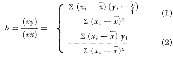

Chapter 6 Diagramme de régression et représentation du coefficient de détermination
6.1 Etat des lieux de la visualisation de la régression
6.1.1 More on Venn Diagrams for Regression
Kennedy (Kennedy 2002) extended the Venn diagram to the exposition of bias and variance in the context of the classical linear regression (CLR) model, written as y = Xb + e .
A compléter
6.1.2 A Geometric Approach to Compare Variables in a Regression Model
He proposes (Bring 1996) a geometric approaches to compare variables in a regression model.
This article gives a brief introduction to the geometric approach in regres- sion analysis, and then geometry is used to shed some light on the problem of comparing the “importance” of the in- dependent variables in a multiple regression model. Even though no final answer of how to assess variable impor- tance is given, it is still useful to illustrate the different measures geometrically to gain a better understanding of their properties.


A compléter
6.1.3 Two Additional Views of Linear Regression Coefficients
The author (Li 1964) proposes an interesting interpretation of the slope in the keast square method. The linear regression line of y on x, as determined by the method of least squares, passes through the central point with slope:

- As a weighted average slope.
This concept of weight for a slope is represented in the accompanying diagrams. (See Figure 1). The slope in the lefthand side diagram has a much larger weight than that in the righthand side for regression of y on x. If we were concerned with the regression of x on y, the reverse would be true. Note that the actual distance between the two points in the two diagrams is the same.

- As a contrast
*A détailler … ou pas …
6.1.4 Covariance and regression diagram
Notre point de départ pour ce package est le travail réalisé par notre professeur (Bousquet 2021)
schémas LS à insérer
6.2 Notre projet: le package
Le principe de construction du schéma suivant donnant une représentation diagrammatique de la régression et des MCO est :
- nous supposons que la covariance (une moyenne de tous les rectangles possibles comme vu précédemment parmi toutes les paires de points d’un échantillon de données) peut être représenté par un rectangle.
- ce rectangle a par définition une aire connue donnée par le calcul de la covariance empirique \(Cov(X,Y)\). Mais la covariance dépend de trois paramètres puisque \(Cov(X,Y) =\rho \sigma_x \sigma_y\) . Pour représenter la covariance et tracer le rectangle correspondant, nous devons faire une hypothèse supplémentaire c’est à dire choisir une normalisation . On suppose qu’un côté de ce rectangle est normalisé par \(\sigma_x\). Dans ce cas, l’autre côté a nécessairement une longueur de \(\rho \sigma_y\).
- suivant la même approche, on suppose maintenant que les variances de \(X\) et \(Y\) peuvent être représentées par deux carrés dont les côtés sont bien sûr les écarts types de \(X\) et \(Y\) respectivement.
Le schéma permet :
- de représenter l’estimateur MCO par la pente de la diagonale du rectangle représentant la covariance. Géométriquement, nous obtenons que si \(X\) augmente d’un écart type alors \(Y\) augmente de \(\rho\) écart type de la variable dépendante Y.
- de représenter la variance expliquée dans la variance totale.
- Représenter correctement le coefficient de détermination comme la part relative de la variance expliqué dans la variance totale. Avec les diagrammes de Venn utilisés parfois pour représenter le \(R^2\) la perception visuelle repose sur la taille relative de deux surfaces et leur intersection. Le diagramme proposé n’est pas une construction il repose sur une fondement méthodologique et théorique permettant non seulement de représenter le \(R^2\) mais aussi de lire correctement sa valeur.
reg lin multiple